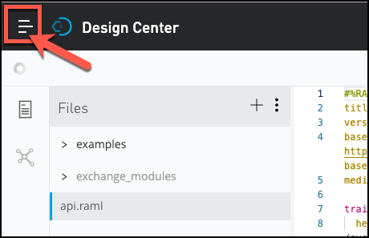
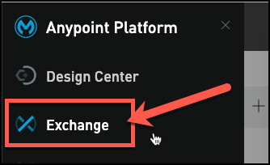
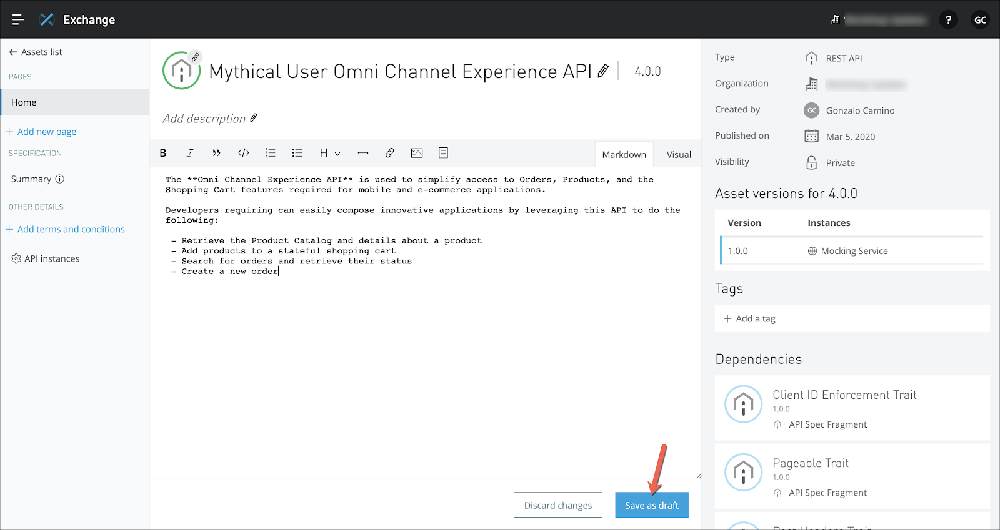
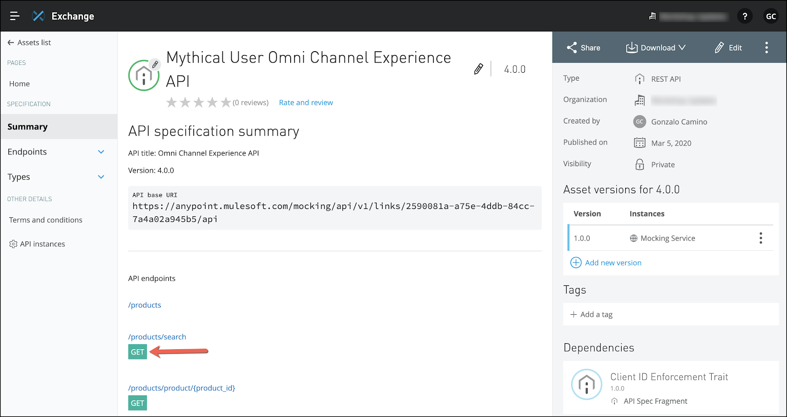

Publicar sua API para o Exchange é tão fácil quanto alguns cliques. No entanto, o Exchange realmente apenas capturou os atributos básicos e a documentação para sua API neste ponto. Garantir que sua API seja fácil de encontrar e "pronta para o autoatendimento" é sua responsabilidade como designer de API. Vamos encontrar nossa API no Exchange e adicionar mais à nossa documentação API.


Os ativos do Exchange são documentados usando a linguagem "markdown". A linguagem Markdown é uma sintaxe independente de formato usada para criar documentação independente de como ela será processada (ou seja, HTML, PDF, texto, etc.). Ele é usado por plataformas populares como o GitHub como a forma padrão de criar documentação de software. Para obter mais informações sobre markdown, consulte:
https://guides.github.com/features/mastering-markdown/
Crie sua própria documentação para sua API ou copie o seguinte texto no editor:
A ** Omni Channel Experience API * * é usado para simplificar o acesso a pedidos, produtos e recursos do carrinho de compras necessários para aplicativos móveis e de e-commerce.
Os desenvolvedores que precisam podem facilmente compor aplicações inovadoras utilizando esta API para fazer o seguinte:
- Recuperar o Catálogo de Produtos e detalhes sobre um produto
- Adicionar produtos a um carrinho de compras com estado
- Pesquisar pedidos e recuperar seu status
- Criar um novo pedido

Se preferir a edição WYSIWYG, então você pode clicar no botão "Visual" na parte superior e ser apresentado a um editor visual em vez do editor baseado em markdown. |
Publish, Discard draftou Exit draft.Publish. Suas alterações na documentação agora estão visíveis no Exchange!Como no Design Center, no Exchange você pode olhar o Resumo da API. O Resumo da API oferece a oportunidade de fazer uma solicitação e chamar o serviço mockado ou uma implementação da API.
Vamos ver como isso pode ser feito.
[GET]
